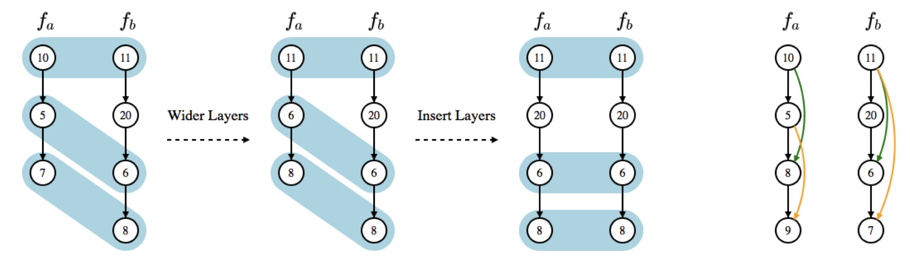

Published on Eigenbytes.blog – Your hub for practical data science & machine learning insights
Neural networks are powerful—but designing the right one? That’s a job even seasoned data scientists can spend weeks fine-tuning. What if a system could do that for you? Enter Auto-Keras, a user-friendly and efficient Neural Architecture Search (NAS) system that automates the tedious and complex process of designing deep learning models.
Originally introduced in the paper “Auto-Keras: An Efficient Neural Architecture Search System” by Jin et al., this open-source project brings AutoML to deep learning, making state-of-the-art model design accessible with just a few lines of code.
Auto-Keras leverages Neural Architecture Search (NAS), a technique that explores a large space of possible network architectures using intelligent search strategies. But standard NAS methods are computationally expensive—often requiring days or even weeks on powerful clusters.
Auto-Keras uses Bayesian optimization to reduce the number of models it needs to test. Instead of randomly guessing, it builds a probabilistic model to guide its search, dramatically cutting down on compute time.
Rather than training each new model from scratch, Auto-Keras uses network morphism—a technique that allows one network to evolve into another while preserving learned weights. This saves computation and accelerates convergence.
Built on TensorFlow and Keras, Auto-Keras provides a clean, Pythonic interface for AutoML. For example:
from autokeras import ImageClassifier
clf = ImageClassifier(max_trials=10)
clf.fit(x_train, y_train)Auto-Keras searches over a wide variety of architectures, including different layer types, sizes, and activations. This allows it to adapt to different tasks—image classification, text, or tabular data.
Auto-Keras performs comparably or even better than manually-designed models on datasets like CIFAR-10 and subsets of ImageNet. It can discover competitive models in hours instead of days, making it highly practical.
Auto-Keras is a significant step forward in democratizing deep learning. With intelligent architecture search, weight inheritance, and an easy API, it offers powerful AutoML capabilities without requiring expert-level knowledge.
Whether you’re a researcher, engineer, or just exploring machine learning, Auto-Keras lets you focus more on solving problems— and less on model design.
Try it: https://autokeras.com